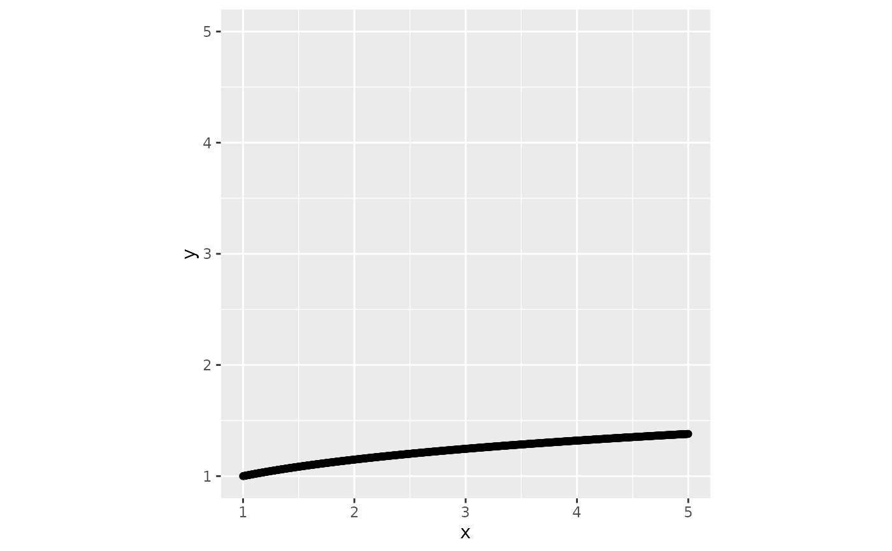

Converts a character string specifying a transformation into a trans object,
or returns the input if it is already a trans object. Supports various
root, log, and other transformations.
Examples
x_vec <- seq(1, 5, length.out = 1000)
y_vec <- get_trans("root_fifth")$transform(x_vec)
plot_tbl <- data.frame(x = x_vec, y = y_vec)
library(ggplot2)
ggplot(plot_tbl, aes(x, y)) +
geom_line() +
geom_point() +
coord_equal() +
expand_limits(x = 5, y = 5)
